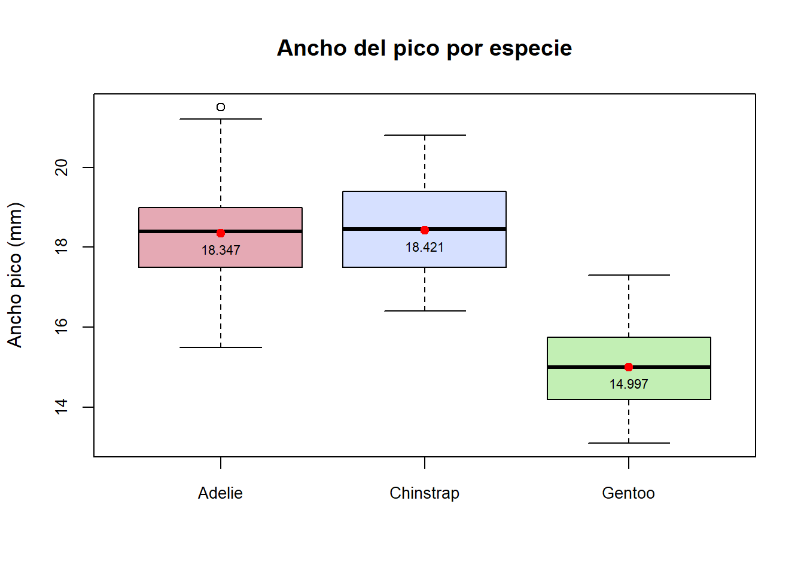
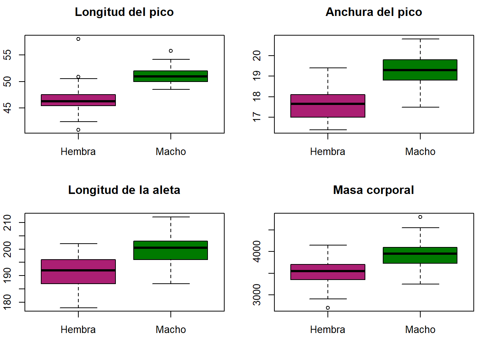
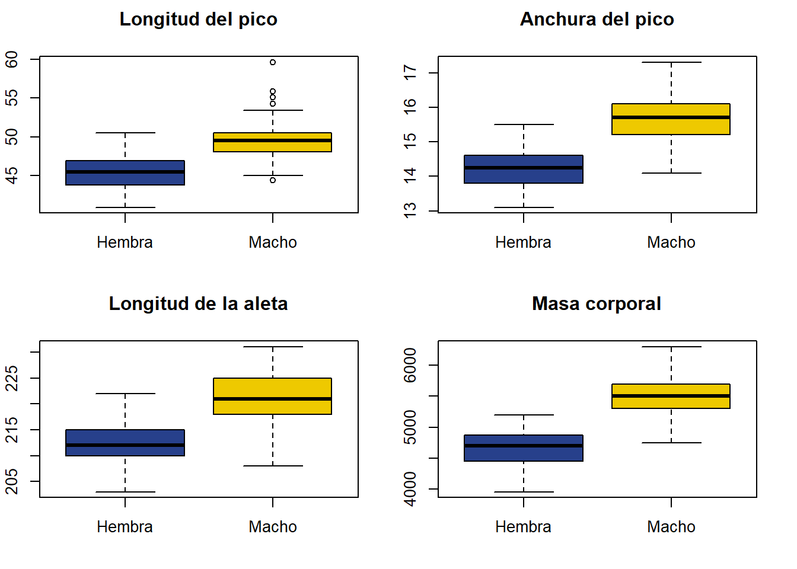

library(palmerpenguins)
datos <- data.frame(penguins)Entrega 1: Pingüinos
Con lo que sabéis de R base, realizad un análisis exploratorio de datos y redactad un reporte con los hallazgos más importantes. No olvidéis agregar en el reporte el URL de vuestro repositorio de GitHub.
Descripción de los datos
El data frame consta de 344 observaciones y 8 variables. Cada muestra representa un pingüino al que se le ha extraido la siguiente información:
species: Especie (Adélie, Chinstrap y Gentoo)island: La isla a la que pertence (Biscoe, Dream o Torgersen)bill_length_mm: Longitud del pico (mm)bill_depth_mm: Ancho del pico (mm)flipper_length_mm: Longitud de la aleta (mm)body_mass_g: Masa corporal (g)sex: sexo (macho o hembra)year: año en que se tomó la muestra
A continuación, visualicemos las primeras muestras del data frame:
head(datos) species island bill_length_mm bill_depth_mm flipper_length_mm body_mass_g
1 Adelie Torgersen 39.1 18.7 181 3750
2 Adelie Torgersen 39.5 17.4 186 3800
3 Adelie Torgersen 40.3 18.0 195 3250
4 Adelie Torgersen NA NA NA NA
5 Adelie Torgersen 36.7 19.3 193 3450
6 Adelie Torgersen 39.3 20.6 190 3650
sex year
1 male 2007
2 female 2007
3 female 2007
4 <NA> 2007
5 female 2007
6 male 2007Primero de todo, observemos que hay muestras que tienen valores desconocidos (NA). Veamos cuales son:
species island bill_length_mm bill_depth_mm flipper_length_mm
4 Adelie Torgersen NA NA NA
9 Adelie Torgersen 34.1 18.1 193
10 Adelie Torgersen 42.0 20.2 190
11 Adelie Torgersen 37.8 17.1 186
12 Adelie Torgersen 37.8 17.3 180
48 Adelie Dream 37.5 18.9 179
179 Gentoo Biscoe 44.5 14.3 216
219 Gentoo Biscoe 46.2 14.4 214
257 Gentoo Biscoe 47.3 13.8 216
269 Gentoo Biscoe 44.5 15.7 217
272 Gentoo Biscoe NA NA NA
body_mass_g sex year
4 NA <NA> 2007
9 3475 <NA> 2007
10 4250 <NA> 2007
11 3300 <NA> 2007
12 3700 <NA> 2007
48 2975 <NA> 2007
179 4100 <NA> 2007
219 4650 <NA> 2008
257 4725 <NA> 2009
269 4875 <NA> 2009
272 NA <NA> 2009Estas observaciones presentan inconvenientes a la hora de tratar los datos, por tanto vamos a eliminarlas. Además, la variable year conviene que sea del tipo factor:
datos = na.omit(datos)
datos$year = as.factor(datos$year)
summary(datos) species island bill_length_mm bill_depth_mm
Adelie :146 Biscoe :163 Min. :32.10 Min. :13.10
Chinstrap: 68 Dream :123 1st Qu.:39.50 1st Qu.:15.60
Gentoo :119 Torgersen: 47 Median :44.50 Median :17.30
Mean :43.99 Mean :17.16
3rd Qu.:48.60 3rd Qu.:18.70
Max. :59.60 Max. :21.50
flipper_length_mm body_mass_g sex year
Min. :172 Min. :2700 female:165 2007:103
1st Qu.:190 1st Qu.:3550 male :168 2008:113
Median :197 Median :4050 2009:117
Mean :201 Mean :4207
3rd Qu.:213 3rd Qu.:4775
Max. :231 Max. :6300 A continuación, mostremos una tabla de frecuencias absolutas que nos indique cuantas especies hay en cada isla:
Adelie Chinstrap Gentoo
Biscoe 44 0 119
Dream 55 68 0
Torgersen 47 0 0Notemos que los pingüinos de la especie Adelie se encuentran en las tres islas. En cambio, los pingüinos de la especie Chinstrap solo están en la isla Dream. Del mismo modo, los de la especie Gentoosolo habitan en la isla Biscoe.
Descripción de las variables cualitativas
A continuación, mostraremos algunas representaciones visuales que dan una información descriptiva de los datos.
Realizamos un diagrama de sectores de las variables species, island, sex y year, las variables de tipo factor.
Desripción de las variables cuantitativas
A continuación, realizaremos una tabla que nos de información numérica de estas cuatro variables cuantitativas, que corresponden con las características antropométricas de los pingüinos.
Long. Pico Ancho Pico Long. Aleta Masa Corporal
Min 32.10 13.10 172.00 2700.00
Primer_Cuartil 39.50 15.60 190.00 3550.00
Mediana 44.50 17.30 197.00 4050.00
Media 43.99 17.16 200.97 4207.06
Tercer_Cuartil 48.60 18.70 213.00 4775.00
Max 59.60 21.50 231.00 6300.00
Sd 5.47 1.97 14.02 805.22Correlación de las variables
Veamos si existe correlación, tanto positiva como negativa, de las variables numéricas. Para ello, mostraremos una matriz de correlaciones.
Cabe destacar la correlación fuerte positiva (valor de +0.87) entre la masa corporal y la longitud de las alas de los pingüinos; es decir, a mayor masa corporal, mayor longitud de alas. Este hecho nos sugiere suponer que si hay una especie que tenga, en general, mayor peso, será porque el animal en sí es más grande.
También hay correlación moderadamente fuerte positiva (valores de +0.59 y +0.65) entre la longitud del pico y la masa corporal, y la longitud del pico y la longitud de la aleta.
Por otro lado, se presenta una correlación moderadamente fuerte negativa (-0.58) entre la longitud de la aleta y el ancho del pico, es decir, cuanto más larga es la aleta, menos ancho el pico y viceversa.
Cruce de variables cuantitativas y cualitativas
Comparemos las medias de las variables cuantitativas en función de cada especie.
Para ello, dividamos el data frame por especies:
ping_adelie = datos[datos$species=="Adelie",]
ping_chinstrap = datos[datos$species=="Chinstrap",]
ping_gentoo = datos[datos$species=="Gentoo",]Para hacer estas comparaciones realizaremos, para cada variable, un diagrama de cajas, al que le añadiremos la media muestral en forma de punto rojo, así como su valor numérico.
Comparación por especies
Longitud del pico
Comparemos la longitud del pico de los pingüinos en función de la especie.

Notemos que los pinguinos de especie Adelie, de media, tienen el pico más corto que las otras dos especies.
Ancho del pico

Notemos que los pinguinos de especie Gentoo, de media, tienen el pico menos ancho que las otras especies.
Longitud de la aleta
Notemos que los pinguinos de especie Gentoo, de media, tienen la aleta más larga que las otras dos especies.
Masa corporal
Notemos que los pingüinos de especie Gentoo, de media, tienen mayor masa corporal que las otras dos especies.
No es de extrañar los resultados que han salido, puesto que la matriz de correlación que hemos presentado al principio indicaba una fuerte dependencia positiva entre flipper_length_mm y body_mass_g, y los pingüinos de la especie Gentoo son los que tienen de media más masa corporal y los que más longitud de la aleta poseen.
Comparaciones geográficas
Como hemos visto anteriormente, la única especie que se encuentra en las tres islas es la especie Adelie. Es usual que, una misma especie de animal, si vive en distintas ubicaciones geográficas, presente diferencias fisiológicas; por tanto, sería interesante comparar las características de esta especie en función de la isla en la que vive.

Notemos que, a simple vista, no hay mucha diferencia en la especie Adelie en función de la isla en la que habite.
Comparación por sexo de cada especie
table(datos$sex, datos$species)
Adelie Chinstrap Gentoo
female 73 34 58
male 73 34 61Especie Adelie
Especie Chinstrap

Especie Gentoo

Como podemos observar, los machos de las tres especies són de mayores dimensiones que las hembras.
Nota: las conclusiones extraidas sobre las medias no pueden extrapolarse a toda la población sin hacer ningun contraste de hipotesis.